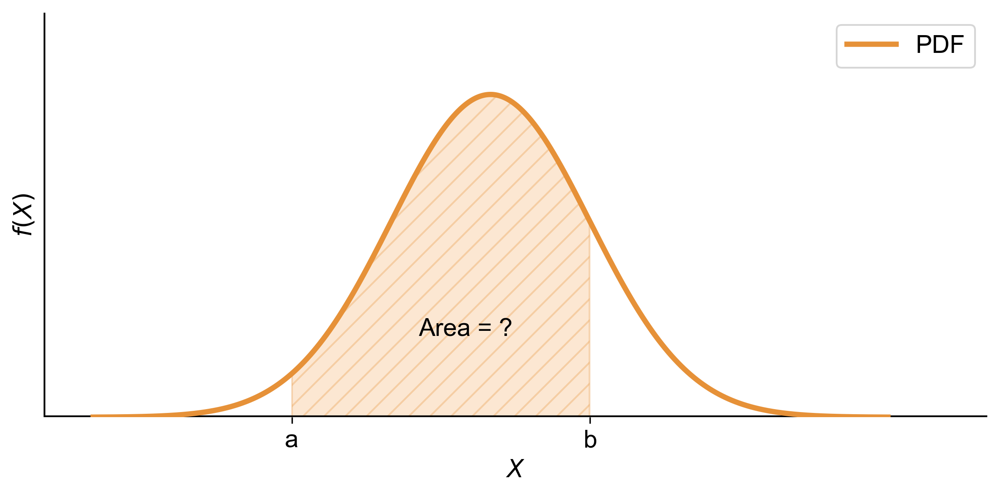
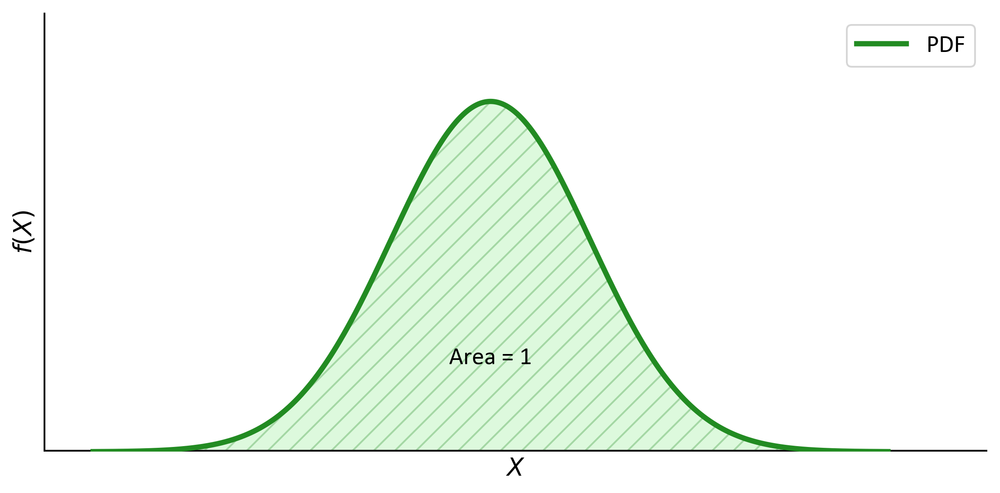
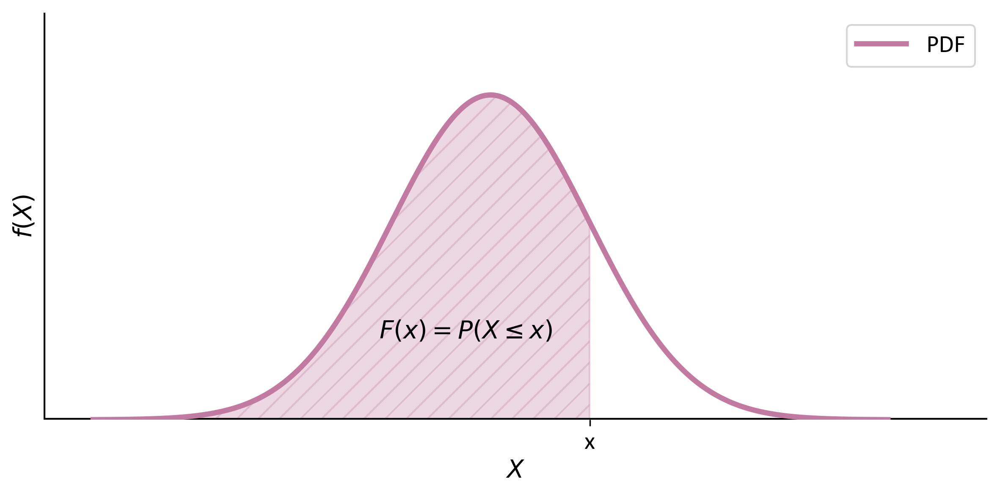
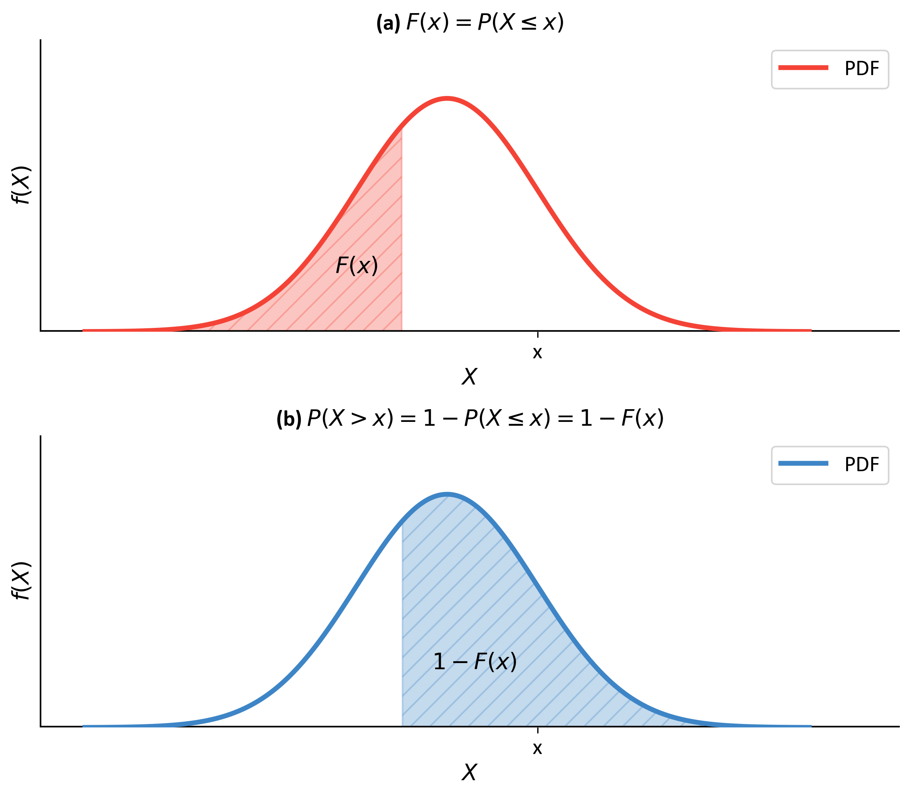
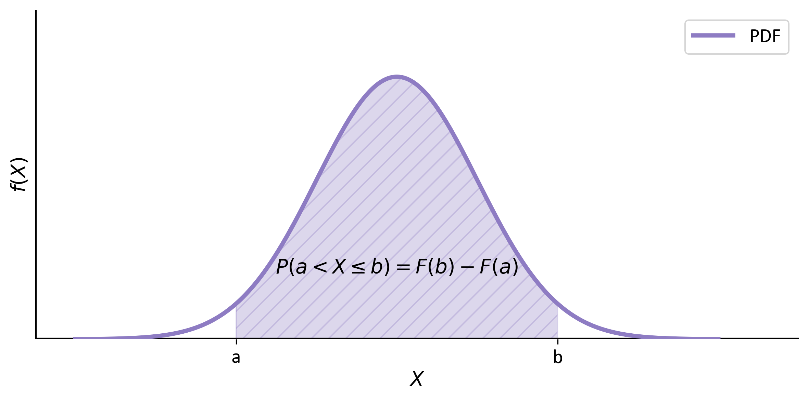

Continuous probability distributions are fundamental in statistics and probability theory, used to model random variables that can take on any value within a given range. Unlike discrete distributions, which deal with countable outcomes, continuous distributions handle an infinite number of possible outcomes within an interval [Blitzstein and Hwang, 2014].
For continuous variables, the probability at a specific point is zero. Instead, we use a Probability Density Function (PDF) to describe the probability over an interval of values.
Normal Distribution: Characterized by its bell-shaped curve, it is symmetric around the mean and describes many natural phenomena such as heights and test scores.
Exponential Distribution: Often used to model the time between events in a Poisson process, such as the time until a radioactive particle decays.
Uniform Distribution: All outcomes are equally likely within a specified range, indicating that any value within that range has the same probability.
Beta Distribution: Flexible distribution often used in Bayesian statistics to model random variables limited to intervals of finite length.
Gamma Distribution: Generalizes the exponential distribution and is used in various fields including queuing models and reliability analysis.
5.1.3. Probability of a Continuous Random Variable#
The probability of the random variable falling within a specific interval \([a,\ b]\) is given by the integral of the PDF over that range [Blitzstein and Hwang, 2014, Holmes et al., 2017]:
(5.1)#\[\begin{equation}
P(a \leq X \leq b) = \int_{a}^{b}{f(x)}\, dx
\end{equation}\]
Fig. 5.1 illustrates the concept of finding the probability of a continuous random variable falling within a specific interval (\([a, b]\)). The graph shows a Probability Density Function (PDF) with the horizontal axis labeled ‘\(X\)’ and the vertical axis labeled ‘\(f(x)\)’. The area under the curve between the points ‘\(a\)’ and ‘\(b\)’ is shaded, representing the probability (\(P(a \leq X \leq b)\)). This shaded area corresponds to the integral of the PDF over the interval (\([a, b]\)), which quantifies the likelihood that the random variable (\(X\)) falls within this range. This visual representation helps in understanding how the integral of the PDF over a specified range provides the probability for that interval.

Fig. 5.1 Graphical representation of the probability of a continuous random variable falling within an interval (\([a,~b]\)) using the integral of the PDF.#
Note
In practical terms, if you have a continuous random variable (like the height of individuals in a population or the time it takes for a process to complete), the PDF helps you understand the likelihood of different outcomes and enables you to calculate probabilities for specific intervals.
5.1.4. Understanding the Probability Density Function (PDF)#
The Probability Density Function, or PDF, is a cornerstone of probability theory and statistics, providing a mathematical representation of the likelihood that a continuous random variable falls within a certain range of values [Blitzstein and Hwang, 2014, Holmes et al., 2017, Wasserman, 2013].
Key Aspects of the PDF:
Non-Negativity: The PDF is always non-negative across its domain, which means it never dips below zero for any value of the random variable. This reflects the fact that probabilities are inherently non-negative.
Area Equals Unity: The integral of the PDF across the entire range of the random variable equals one, signifying that the total probability across all possible outcomes is 100%.
Mathematical Representation:
For a continuous random variable \(X\) with a PDF denoted as \(f(x)\), these properties are formally stated as:
The function satisfies \(f(x) \geq 0\) for all \(x\) in the domain of \(X\).
Probability of Specific Values: The probability that \(X\) equals any particular value is zero, which aligns with the continuous nature of \(X\).
Probability of Ranges: The probability that \(X\) falls within a specific interval is determined by the area under the PDF curve over that interval.
Fig. 5.2 illustrates a Probability Density Function (PDF) of a continuous random variable. The bell-shaped curve represents different outcomes’ likelihoods. The curve never dips below zero, reflecting non-negativity. The shaded area under the curve signifies that total probability across all possible outcomes is 100%, aligning with how we define PDFs.

Fig. 5.2 Graphical representation of a Probability Density Function (PDF) demonstrating key properties such as non-negativity and an integral summing to unity.#
5.1.5. Properties of Continuous Probability Distributions#
Measurement of Outcomes: Outcomes in continuous probability distributions are quantified on a continuum, which means they can take any value within a given range rather than being limited to discrete counts.
Total Area Under the Curve: The total area under the curve of the PDF for a random variable \(X\) sums to one, indicating that total probability is distributed across all possible values of \(X\). Mathematically expressed as:
Probability of Intervals: In continuous distributions, we assign probabilities to ranges or intervals of values rather than specific points, which aligns with their continuous nature.
Interval Probability: The probability that \(X\) lies within an interval \((a, b)\) is found by calculating area under the PDF curve between \(a\) and \(b\), given by:
(5.4)#\[\begin{equation}P(a < X < b) = \int_{a}^{b} f(x) \, dx\end{equation}\]
Point Probability: The probability that a continuous random variable \(X\) will equal any exact value is zero; thus \(P(X = c) = 0\). This arises because a point has no width and therefore no area under its curve.
Equivalent Probabilities: For continuous distributions, probabilities \(P(c < X < d)\) and \(P(c \leq X \leq d)\) are equivalent because including or excluding a single point does not affect overall probability based on area under the curve.
These properties are integral to characterizing continuous random variables and provide foundational knowledge for statistical analysis involving continuous data.
5.1.6. Applications of Continuous Probability Distributions#
Continuous distributions are used in various fields:
Physics: Modeling particle positions in quantum mechanics.
Finance: Analyzing stock prices and returns.
Engineering: Estimating failure times for components.
Biology: Studying growth rates among organisms.
For instance, heights in populations are often modeled using normal distributions while time until an event occurs may follow an exponential distribution.
The Cumulative Distribution Function (CDF), denoted as \(F(x)\) or \(P(X \leq x)\), is a fundamental concept in probability theory for continuous distributions. It represents the probability that a random variable \(X\) will take a value less than or equal to \(x\). The CDF is a powerful tool for calculating probabilities and understanding the distribution of a random variable.
Mathematically, for continuous distributions, the CDF is defined as the integral of the Probability Density Function (PDF):
Where \(f(t)\) is the PDF of the random variable \(X\).
For continuous distributions, the CDF can also be expressed as \(P(X < x)\) because the probability of \(X\) taking on any exact value is zero. This is an important distinction from discrete distributions. The CDF is graphically represented by the “area to the left” under the probability density function (PDF) curve up to point \(x\).
Fig. 5.3 illustrates the concept of the Cumulative Distribution Function (CDF) for a continuous random variable. The graph shows a Probability Density Function (PDF) with the horizontal axis labeled \(X\) and the vertical axis labeled \(f(x)\). The area under the curve to the left of a vertical line at point \(x\) is shaded in purple, representing the CDF, denoted as \(P(X \leq x)\). This shaded area indicates the probability that the random variable \(X\) will take a value less than or equal to \(x\).

Fig. 5.3 Graphical representation of the Cumulative Distribution Function (CDF) showing the probability \(P(X \leq x)\) as the area to the left under the PDF curve.#
Note
The CDF is a crucial tool in statistical analysis and has wide-ranging applications in fields such as finance (risk assessment), engineering (reliability analysis), and data science (probability modeling). Its ability to provide probabilities for ranges of values makes it particularly useful in practical scenarios where we often need to consider intervals rather than exact points.
This formula leverages the fact that the total probability is 1, so the probability of exceeding \(x\) is the complement of the probability of being less than or equal to \(x\).

Fig. 5.4 Graph (a): This graph shows the cumulative distribution function (CDF), \(F(x) = P(X \leq x)\). The red curve represents the probability density function (PDF), and the shaded area to the left of point \(x\) indicates the cumulative probability up to that point. Graph (b): This graph illustrates the complementary cumulative distribution function (CCDF), \(P(X > x) = 1 - P(X \leq x) = 1 - F(x)\). The blue curve represents the PDF, and the shaded area to the right of point \(x\) signifies the probability of the variable being greater than \(x\).#
(b) Probability that \(X\) falls within an interval \((a, b]\):
(5.8)#\[\begin{equation}
P(a < X \leq b) = F(b) - F(a)
\end{equation}\]
This formula calculates the probability in the interval by taking the difference of the CDFs at the endpoints.

Fig. 5.5 Complementary Cumulative Distribution Function (CCDF): This graph illustrates the probability that a continuous random variable \(X\) exceeds a certain value \(x\). The shaded area under the curve between points \(a\) and \(b\) represents the probability \(P(a \leq X \leq b)\), calculated as \(F(b) - F(a)\), where \(F(x)\) is the cumulative distribution function (CDF).#